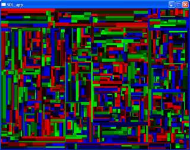

After closing the window, you can try the painter demo where you can draw with the mouse:
(sdl-examples:mouse-painter)
Groovy. You should see a window like this:
")
The lispbuilder-SDL package is a part of the Common Lisp Application Builder project which is in turn a part of the umbrella Common Lisp Gardeners project.
The purpose of this documement is to describe a step-by-step process by which the user may install, configure and begin using the lispbuilder-SDL package to create applications using one of the supported Lisp implementations.
The list of credits is contained in CONTRIBUTORS. A copy of the license is contained in COPYING.
The following table describes the status of the Lisp implementations that have been tested with lispbuilder-SDL:
| Lisp Implementation | lispbuilder-SDL Status | Comments | ||
| Win32 | Linux | MacOS | ||
| CLISP v2.38 | Working | Unknown | Unknown | |
| Lispworks v2.4.6 Personal | Working | Working | Unknown | As of [03/30/06], use the 'CFFI-060214' tarball for Windows as more recent versions do not work. |
| Allegro Trial Edition 7.0 | Unknown | Unknown | Unknown | |
| OpenMCL | NA | NA | Unknown | |
| SBCL | When, oh when? | Working | Unknown | |
| CMUCL | When already? | Unknown | NA | |
The asdf.lisp and CFFI packages are required prior to the installation of lispbuilder-SDL. The installation of these packages is descibed in following section.
This section describes the installation of the ASDF and CFFI packages for CLISP in Windows.
c:\programme\clisp-2.38\
c:\programme\clisp-2.38\asdf\
c:\programme\clisp-2.38\asdf\asdf.lisp
c:\programme\clisp-2.38\asdf\cffi\cffi.asd
This section describes the installation of the lispbuilder-sdl package and SDL binaries for Windows.
c:\programme\clisp-2.38\asdf\lispbuilder-sdl\lispbuilder-sdl.asd
c:\windows\system32
c:\programme\clisp-2.38\asdf\lispbuilder-sdl\lispbuilder-sdl-binaries.asd
c:\programme\clisp-2.38\asdf\lispbuilder-sdl\bin\SDL.dll
Change the *central-registry* parameter in the asdf.lisp file (somewhere at line 346):
(defvar *central-registry*
'("c:/programme/clisp-2.38/asdf/cffi/"
"c:/programme/clisp-2.38/asdf/lispbuilder-sdl/"))
Now start CLISP and enter the following at the prompt:
(load "c:/programme/clisp-2.38/asdf/asdf.lisp") (asdf:operate 'asdf:load-op :lispbuilder-sdl-examples)
ASDF will take care of loading the CFFI and :lispbuilder-sdl dependencies. The SDL.dll library will also be loaded into the Lisp image at this time.
Great. If you received any errors during this processes then go back and verify that the pathnames entered into the *central-registry* match the directories where the packages were installed. Also verify that the SDL.dll library is located somewhere in the search path, as described above.
To verify that lispbuilder-sdl is installed correctly, run one of the examples by entering:
(sdl-examples:recursive-rects)
You should see a window like this:
After closing the window, you can try the painter demo where you can draw with the mouse:
(sdl-examples:mouse-painter)
Groovy. You should see a window like this:
The Common Lisp Application Builder project relies on SWIG to create the CFFI bindings for SDL. SWIG requires an interface (.i) file (lispbuilder-sdl/sdlswig.i) to create the CFFI bindings from the SDL C headers. To recreate the SDL CFFI bindings from scratch, download the SDL development libraries from SDL (these contain the SDL C header files) and place the sdlswig.i interface file into the include/ directory. Retrieve and compile the latest version of SWIG from CVS (the CVS version contains additions necessary to perform the CFFI conversion).
Currently SWIG does not provide a fully automated build solution and there are a few things that must be modified in the SDL headers as described below. There are only a handful of changes that are easily wrapped in "#ifdef SWIG" blocks allowing the headers to remain unchanged if SDL is rebuild from sources.
Remove event bit masks (SDL_EVENTMASK) by enclosing in SWIG defines as follows:
#ifndef SWIG
/* Predefined event masks */
#define SDL_EVENTMASK(X) (1<<(X))
enum {
SDL_ACTIVEEVENTMASK = SDL_EVENTMASK(SDL_ACTIVEEVENT),
SDL_KEYDOWNMASK = SDL_EVENTMASK(SDL_KEYDOWN),
SDL_KEYUPMASK = SDL_EVENTMASK(SDL_KEYUP),
SDL_MOUSEMOTIONMASK = SDL_EVENTMASK(SDL_MOUSEMOTION),
SDL_MOUSEBUTTONDOWNMASK = SDL_EVENTMASK(SDL_MOUSEBUTTONDOWN),
SDL_MOUSEBUTTONUPMASK = SDL_EVENTMASK(SDL_MOUSEBUTTONUP),
SDL_MOUSEEVENTMASK = SDL_EVENTMASK(SDL_MOUSEMOTION)|
SDL_EVENTMASK(SDL_MOUSEBUTTONDOWN)|
SDL_EVENTMASK(SDL_MOUSEBUTTONUP),
SDL_JOYAXISMOTIONMASK = SDL_EVENTMASK(SDL_JOYAXISMOTION),
SDL_JOYBALLMOTIONMASK = SDL_EVENTMASK(SDL_JOYBALLMOTION),
SDL_JOYHATMOTIONMASK = SDL_EVENTMASK(SDL_JOYHATMOTION),
SDL_JOYBUTTONDOWNMASK = SDL_EVENTMASK(SDL_JOYBUTTONDOWN),
SDL_JOYBUTTONUPMASK = SDL_EVENTMASK(SDL_JOYBUTTONUP),
SDL_JOYEVENTMASK = SDL_EVENTMASK(SDL_JOYAXISMOTION)|
SDL_EVENTMASK(SDL_JOYBALLMOTION)|
SDL_EVENTMASK(SDL_JOYHATMOTION)|
SDL_EVENTMASK(SDL_JOYBUTTONDOWN)|
SDL_EVENTMASK(SDL_JOYBUTTONUP),
SDL_VIDEORESIZEMASK = SDL_EVENTMASK(SDL_VIDEORESIZE),
SDL_VIDEOEXPOSEMASK = SDL_EVENTMASK(SDL_VIDEOEXPOSE),
SDL_QUITMASK = SDL_EVENTMASK(SDL_QUIT),
SDL_SYSWMEVENTMASK = SDL_EVENTMASK(SDL_SYSWMEVENT)
};
#endif
As described above, SWIG uses rules specified in the interface file, sdlswig.i, to create the the CFFI bindings. This interface file contains several structures that by necessity are redefined in Lisp. When rebuilding the CFFI bindings from scratch using a version of SDL later than 1.2.9, care must be taken to ensure that the structure of the manual overrides match the constructs in the C header files. All overrides are grouped in the interface file within the following tags:
;;;; Overrides to C header files follow: ;;;; ;;;; ;;;; end Overrides
The post-swig.lisp file also contains C header file overrides. These are not included in sdlswig.i as SWIG places all manual overrides prior to the generated bindings. The overrides in the post-swig.lisp file must be located post- generated bindings. As with the sdlswig.i file, when rebuilding the CFFI bindings from scratch using a version of SDL later than 1.2.9, care must be taken to ensure that the structure of the manual overrides match the constructs in the C header files. All overrides are grouped in the interface file within the following tags:
;;;; Overrides to C header files follow: ;;;; ;;;; ;;;; end Overrides
Run swig using:
swig -cffi -ILib -ILib\cffi sdlswig.i